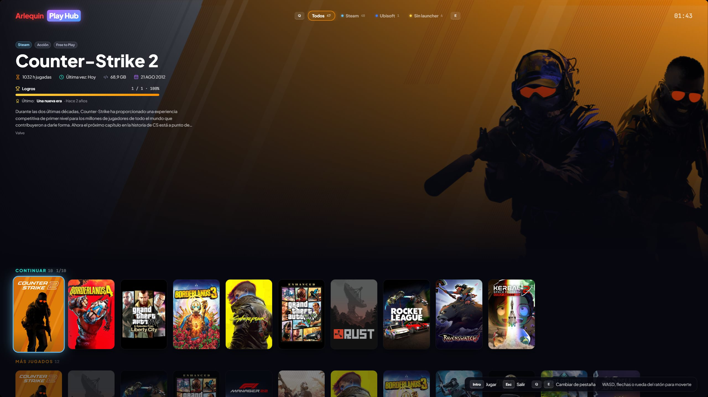

Play Hub: per giocare dal divano
Un’interfaccia a schermo intero pensata per il controller e la TV.
Con F11 o dalla barra laterale, GameHub diventa un’interfaccia grande da usare con il controller: copertine enormi, il gioco selezionato sullo sfondo con le sue info e movimento fluido, uno alla volta.
In alto hai le schede: «Tutti» e una per ogni store. Cambi scheda con L1/R1 (LB/RB su Xbox) e ognuna ha le sue file: Continua, I più giocati e tutta la tua libreria. Quando torni a una scheda sei dove eri rimasto, e quando chiudi un gioco aperto da Play Hub torni a Play Hub sullo stesso gioco.
Riconosce i controller Xbox, PlayStation e Switch e cambia i pulsanti mostrati in base a quello che usi (o a quelli che scegli). Funziona anche con la tastiera (frecce, WASD, Q/E) e la rotella del mouse. I giochi senza copertina ne ricevono una propria, con nome e colori.
Mostra la batteria del tuo portatile o Steam Deck, dei controller e delle cuffie, si adatta a schermi piccoli come quello dello Steam Deck e, mentre giochi, il controller non lo comanda più in background.
Il tasto Menu/Start apre un menu per fare tutto col controller: cercare (con tastiera a schermo), gioco a caso, filtrare (anche per genere) e ordinare, la scheda del gioco (gioca, impostazioni grafiche, copia SaveHub e ripristino), impostazioni, andare ad altre sezioni o alla Scatola della fortuna, e spegnere, riavviare o sospendere il PC.
Come si usa
- F11 o «Play Hub» nella barra laterale.
- In Opzioni → Controller e Play Hub scegli lo stile dei pulsanti.
- In Opzioni → Controller e Play Hub puoi nascondere e riordinare le righe di Play Hub (Continua, Più giocati) e le sezioni di «Vai a…».

Lo provi?
⬇ Download diretto 🛍️ Scarica dal Microsoft StoreWindows 10 e 11 (64 bit) · Gratis · Si aggiorna da solo